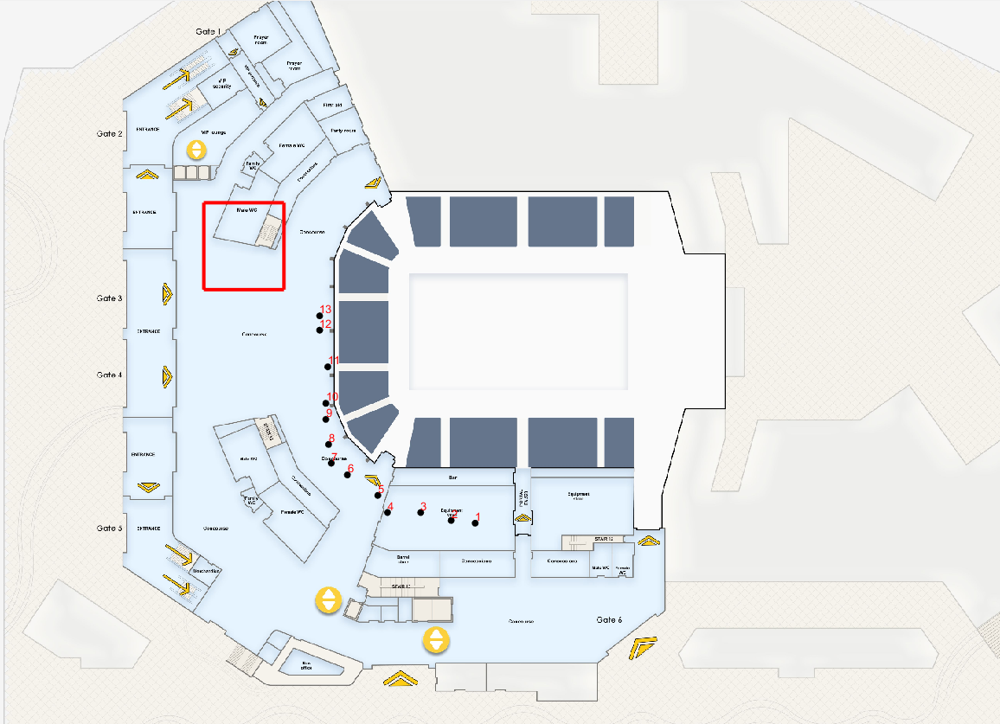

To make our test and integration easier we have some pre-configured simulation scenarios that we use to demonstrate the functionalities of our SDK on the Sample App
In this scenario we have the path points starting and ending in the same floor as seen in the following image
In this scenario we have the path points starting in a floor and ending in another one as seen in the following images, this involves a transition between the two floors in the points 9 and 10
If you have a question, please check our FAQ page, or send us a message to support@penguinin.com